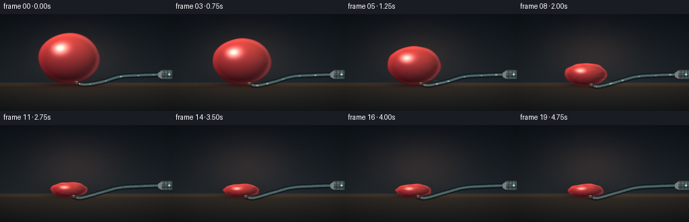
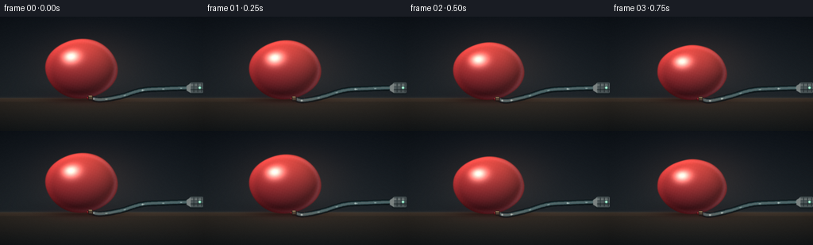

CODING AGENTS AS PIXEL WORLD MODELS
traex/DeepSeek-V4.1-Flash · phygen_020
点击播放 · 原生 RGB 像素
逐轮保存的候选
回放视频、检查图与代码变化。
每份候选均可单独播放。实际图片检查记录在下方工具轨迹中。
候选 01播放与检查图
点击播放 · 原生 RGB 像素

展开代码变化
--- 上一保存版本
+++ 本次保存版本
@@ -0,0 +1,408 @@
+from __future__ import annotations
+
+import math
+from pathlib import Path
+
+import numpy as np
+from PIL import Image, ImageDraw, ImageFilter
+
+import artifact_io
+
+
+W, H = 256, 144
+SS = 3
+RW, RH = W * SS, H * SS
+FPS = 4.0
+NFRAMES = 20
+
+
+def smoothstep(edge0: float, edge1: float, x: np.ndarray) -> np.ndarray:
+ t = np.clip((x - edge0) / (edge1 - edge0), 0.0, 1.0)
+ return t * t * (3.0 - 2.0 * t)
+
+
+def normalize(v: np.ndarray) -> np.ndarray:
+ return v / np.maximum(np.linalg.norm(v, axis=-1, keepdims=True), 1e-6)
+
+
+def catmull_rom(points: list[tuple[float, float]], samples_per_segment: int = 24) -> np.ndarray:
+ pts = np.asarray(points, dtype=np.float32)
+ pts = np.vstack([pts[0], pts, pts[-1]])
+ out = []
+ for i in range(1, len(pts) - 2):
+ p0, p1, p2, p3 = pts[i - 1], pts[i], pts[i + 1], pts[i + 2]
+ for j in range(samples_per_segment):
+ t = j / samples_per_segment
+ t2, t3 = t * t, t * t * t
+ p = 0.5 * (
+ (2.0 * p1)
+ + (-p0 + p2) * t
+ + (2.0 * p0 - 5.0 * p1 + 4.0 * p2 - p3) * t2
+ + (-p0 + 3.0 * p1 - 3.0 * p2 + p3) * t3
+ )
+ out.append(p)
+ out.append(pts[-2])
+ return np.asarray(out, dtype=np.float32)
+
+
+def point_on_path(path: np.ndarray, fraction: float) -> tuple[float, float]:
+ fraction = fraction % 1.0
+ pos = fraction * (len(path) - 1)
+ i = min(int(pos), len(path) - 2)
+ f = pos - i
+ p = path[i] * (1.0 - f) + path[i + 1] * f
+ return float(p[0]), float(p[1])
+
+
+def make_background(frame: int, p: float, cx: float, rx: float) -> np.ndarray:
+ yy, xx = np.mgrid[0:RH, 0:RW].astype(np.float32)
+ yn = yy / RH
+ xn = xx / RW
+ horizon = 103.0 * SS
+
+ wall_top = np.array([16.0, 22.0, 29.0], dtype=np.float32)
+ wall_bottom = np.array([34.0, 41.0, 46.0], dtype=np.float32)
+ wall_mix = np.clip(yy / horizon, 0.0, 1.0)[..., None]
+ img = wall_top * (1.0 - wall_mix) + wall_bottom * wall_mix
+
+ table_top = np.array([53.0, 46.0, 39.0], dtype=np.float32)
+ table_bottom = np.array([23.0, 27.0, 29.0], dtype=np.float32)
+ table_mix = np.clip((yy - horizon) / (RH - horizon), 0.0, 1.0)[..., None]
+ table = table_top * (1.0 - table_mix) + table_bottom * table_mix
+ img = np.where((yy >= horizon)[..., None], table, img)
+
+ # Warm studio pool behind the subject, kept subtle enough to preserve the silhouette.
+ spot_x = (xx - 112.0 * SS) / (86.0 * SS)
+ spot_y = (yy - 59.0 * SS) / (52.0 * SS)
+ spot = np.exp(-(spot_x * spot_x + spot_y * spot_y) * 1.8)[..., None]
+ img += spot * np.array([24.0, 13.0, 8.0], dtype=np.float32)
+
+ # A low table bevel gives the scene depth without adding distracting props.
+ bevel = np.exp(-((yy - horizon) / (1.7 * SS)) ** 2)[..., None]
+ img += bevel * np.array([21.0, 15.0, 10.0], dtype=np.float32)
+ img += np.exp(-((yy - horizon - 3.0 * SS) / (1.2 * SS)) ** 2)[..., None] * np.array(
+ [12.0, 7.0, 5.0], dtype=np.float32
+ )
+
+ # Fine table grain and wall texture.
+ grain = np.sin(xx * 0.034 + np.sin(yy * 0.026) * 2.2) * np.sin(yy * 0.10 + 0.7)
+ grain *= smoothstep(horizon - 2 * SS, horizon + 20 * SS, yy) * 0.020
+ img += grain[..., None] * np.array([1.0, 0.72, 0.5], dtype=np.float32)
+
+ # Contact and ambient shadows.
+ sx = (xx - cx) / max(rx * 1.15, 20.0 * SS)
+ sy = (yy - 105.0 * SS) / (4.0 * SS)
+ shadow = np.exp(-(sx * sx + sy * sy) * 1.6)
+ img *= 1.0 - 0.45 * shadow[..., None]
+ ax = (xx - cx) / max(rx * 1.55, 22.0 * SS)
+ ay = (yy - 100.0 * SS) / (12.0 * SS)
+ ambient = np.exp(-(ax * ax + ay * ay) * 1.2)
+ img *= 1.0 - 0.18 * ambient[..., None]
+
+ # Gentle vignette keeps the eye on the extraction point.
+ vx = (xn - 0.50) * 1.24
+ vy = (yn - 0.48) * 1.08
+ vignette = np.clip(1.0 - 0.40 * (vx * vx + vy * vy), 0.58, 1.0)
+ img *= vignette[..., None]
+ return np.clip(img, 0.0, 255.0)
+
+
+def draw_tube(base: np.ndarray, p: float, cx: float, cy: float, rx: float, ry: float, frame: int) -> None:
+ start = (cx + rx * 0.24, cy + ry - 1.0 * SS)
+ sag = (1.0 - p) * 1.0 * SS
+ ctrl = [
+ start,
+ (start[0] + 12.0 * SS, start[1] + 2.0 * SS + sag),
+ (151.0 * SS, 100.0 * SS + sag),
+ (178.0 * SS, 93.0 * SS),
+ (207.0 * SS, 91.0 * SS),
+ (233.0 * SS, 90.0 * SS),
+ (258.0 * SS, 89.0 * SS),
+ ]
+ path = catmull_rom(ctrl, 18)
+ layer = Image.new("RGBA", (RW, RH), (0, 0, 0, 0))
+ d = ImageDraw.Draw(layer)
+ pts = [(float(x), float(y)) for x, y in path]
+
+ # Dark outer hose, translucent body, and a cool inner highlight.
+ d.line(pts, fill=(8, 18, 21, 245), width=7 * SS, joint="curve")
+ d.line(pts, fill=(35, 60, 64, 235), width=5 * SS, joint="curve")
+ d.line(pts, fill=(91, 126, 128, 180), width=3 * SS, joint="curve")
+ d.line([(x, y - 0.8 * SS) for x, y in pts], fill=(173, 207, 204, 105), width=SS, joint="curve")
+
+ # A slight glassy edge makes the hose read as a transparent evacuation line.
+ d.line([(x, y + 2.1 * SS) for x, y in pts], fill=(5, 12, 15, 150), width=SS, joint="curve")
+
+ # Moving air flecks travel toward the vacuum source.
+ if p < 0.992:
+ speed = 0.025 + 0.045 * (1.0 - p)
+ for i in range(7):
+ q = (0.08 + i / 7.0 + frame * speed) % 0.96
+ x, y = point_on_path(path, q)
+ x2, y2 = point_on_path(path, q + 0.014)
+ alpha = int(150 * (1.0 - max(0.0, p - 0.82) / 0.18))
+ d.line((x, y, x2, y2), fill=(211, 249, 244, alpha), width=round(1.4 * SS))
+ if i % 3 == 0:
+ d.ellipse((x - SS, y - SS, x + SS, y + SS), fill=(229, 255, 249, min(210, alpha + 25)))
+
+ arr = np.asarray(layer, dtype=np.float32)
+ a = arr[..., 3:4] / 255.0
+ base[:] = base * (1.0 - a) + arr[..., :3] * a
+
+
+def draw_nozzle(base: np.ndarray) -> None:
+ layer = Image.new("RGBA", (RW, RH), (0, 0, 0, 0))
+ d = ImageDraw.Draw(layer)
+
+ # Vacuum handpiece at the right edge.
+ d.rounded_rectangle((237 * SS, 82 * SS, 259 * SS, 98 * SS), radius=4 * SS, fill=(22, 30, 33, 255))
+ d.rounded_rectangle((238 * SS, 83 * SS, 257 * SS, 96 * SS), radius=3 * SS, fill=(75, 85, 87, 255))
+ d.polygon(
+ [
+ (235 * SS, 87 * SS),
+ (240 * SS, 84 * SS),
+ (240 * SS, 96 * SS),
+ (235 * SS, 93 * SS),
+ ],
+ fill=(122, 130, 129, 255),
+ )
+ d.line((239 * SS, 86 * SS, 255 * SS, 86 * SS), fill=(180, 187, 183, 175), width=SS)
+ d.line((240 * SS, 92 * SS, 257 * SS, 92 * SS), fill=(35, 44, 46, 200), width=SS)
+ for x in (244, 249, 254):
+ d.line((x * SS, 84 * SS, x * SS, 95 * SS), fill=(43, 52, 54, 180), width=SS)
+ d.ellipse((250 * SS, 88 * SS, 253 * SS, 91 * SS), fill=(99, 221, 178, 255))
+ d.ellipse((250.6 * SS, 88.6 * SS, 252.4 * SS, 90.4 * SS), fill=(201, 255, 226, 255))
+
+ arr = np.asarray(layer, dtype=np.float32)
+ a = arr[..., 3:4] / 255.0
+ base[:] = base * (1.0 - a) + arr[..., :3] * a
+
+
+def render_balloon(
+ base: np.ndarray,
+ frame: int,
+ p: float,
+ cx: float,
+ cy: float,
+ rx: float,
+ ry: float,
+) -> None:
+ yy, xx = np.mgrid[0:RH, 0:RW].astype(np.float32)
+ u = (xx - cx) / rx
+ v = (yy - cy) / ry
+ theta = np.arctan2(v, u)
+ r = np.sqrt(u * u + v * v)
+
+ # The silhouette gains lobed edges and a sagging waist as the latex loses pressure.
+ phase = frame * 0.33
+ edge_wave = (
+ 0.012 * np.sin(4.0 * theta + 0.4)
+ + 0.020 * p * np.sin(7.0 * theta - 0.7 + phase)
+ + 0.014 * p * np.sin(11.0 * theta + 1.1 - phase * 0.7)
+ )
+ warp = 0.06 * p * np.sin(2.2 * u + 0.7 + phase * 0.35)
+ vv = v - warp * np.sin(math.pi * np.clip((u + 1.0) * 0.5, 0.0, 1.0))
+ rr = np.sqrt(u * u + vv * vv)
+ sdf = rr - (1.0 + edge_wave)
+ alpha = smoothstep(0.022, -0.012, sdf)
+
+ # A rounded, slightly pointed crown reads more like an inflated latex balloon.
+ if p < 0.25:
+ crown = smoothstep(0.20, 0.0, p) * 0.016 * np.exp(-((u + 0.05) / 0.32) ** 2) * np.clip(v + 0.45, 0.0, 1.0)
+ alpha *= 1.0 - crown * (v < -0.55)
+
+ if not np.any(alpha > 0):
+ return
+
+ # Front-surface pseudo-normal with pressure-dependent flattening.
+ z = np.sqrt(np.clip(1.0 - np.clip(rr, 0.0, 0.999) ** 2, 0.0, 1.0))
+ n = np.stack(
+ [
+ u * (0.93 - 0.18 * p),
+ vv * (0.95 - 0.13 * p),
+ z * (1.0 - 0.36 * p) + 0.10,
+ ],
+ axis=-1,
+ )
+ n = normalize(n)
+
+ light = normalize(np.array([-0.52, -0.76, 0.74], dtype=np.float32))
+ fill_dir = normalize(np.array([0.68, 0.24, 0.62], dtype=np.float32))
+ half = normalize(light + np.array([0.0, 0.0, 1.0], dtype=np.float32))
+ ndl = np.clip(np.sum(n * light, axis=-1), 0.0, 1.0)
+ fill = np.clip(np.sum(n * fill_dir, axis=-1), 0.0, 1.0)
+ spec = np.clip(np.sum(n * half, axis=-1), 0.0, 1.0) ** 44
+
+ # Broad latex body color: warm coral at the top, oxblood in the lower folds.
+ top_col = np.array([232.0, 77.0, 68.0], dtype=np.float32)
+ low_col = np.array([113.0, 24.0, 39.0], dtype=np.float32)
+ blend = np.clip(0.56 + 0.44 * (-vv) + 0.10 * u, 0.0, 1.0)[..., None]
+ body_col = low_col * (1.0 - blend) + top_col * blend
+
+ # Pressure wrinkles: low-frequency folds plus tighter crumples near the rim.
+ crease_a = np.sin(8.0 * theta + 5.5 * rr - phase * 2.0 + 0.7 * np.sin(3.0 * theta))
+ crease_b = np.sin(15.0 * vv - 7.0 * u + phase * 1.7)
+ crease_c = np.sin(23.0 * vv + 4.0 * u - phase * 1.1)
+ fold = (0.050 * crease_a + 0.032 * crease_b + 0.020 * crease_c) * p
+ fold *= 0.35 + 0.65 * np.clip(rr, 0.0, 1.0)
+
+ shade = 0.34 + 0.73 * ndl + 0.10 * fill
+ shade *= 1.0 + fold
+ col = body_col * shade[..., None]
+ col += np.array([128.0, 170.0, 178.0], dtype=np.float32) * (0.055 * fill)[..., None]
+
+ # Soft, broad key reflection and a narrow glint.
+ glint = spec * (0.80 - 0.22 * p)
+ col += np.array([255.0, 238.0, 219.0], dtype=np.float32) * glint[..., None]
+ broad = np.exp(-(((u + 0.38) / 0.20) ** 2 + ((vv + 0.44) / 0.14) ** 2)) * (0.15 - 0.08 * p)
+ col += broad[..., None] * np.array([255.0, 183.0, 157.0], dtype=np.float32)
+
+ # Saturated thin-latex rim and a cool reflected edge on the shadow side.
+ edge = smoothstep(0.78, 1.0, rr)
+ col += edge[..., None] * np.array([132.0, 25.0, 24.0], dtype=np.float32) * (0.23 + 0.10 * p)
+ cool_rim = np.exp(-((rr - 0.94) / 0.055) ** 2) * np.clip(0.55 + 0.65 * u, 0.0, 1.0)
+ col += cool_rim[..., None] * np.array([42.0, 72.0, 88.0], dtype=np.float32) * 0.22
+
+ # Fine latex grain, strongest in the compressed folds.
+ tex = (
+ np.sin(xx * 0.47 + yy * 0.31)
+ + np.sin(xx * 0.19 - yy * 0.53 + 1.7)
+ + np.sin(xx * 0.73 + yy * 0.11 + 0.9)
+ ) / 3.0
+ col += (tex * (1.5 + 3.0 * p))[..., None]
+
+ # Darken the underside where the balloon meets the table.
+ underside = smoothstep(0.50, 1.0, vv) * smoothstep(0.20, 0.95, rr)
+ col *= 1.0 - 0.20 * underside[..., None]
+
+ a = alpha[..., None]
+ base[:] = base * (1.0 - a) + np.clip(col, 0.0, 255.0) * a
+
+
+def draw_knot(base: np.ndarray, cx: float, cy: float, rx: float, ry: float, p: float) -> None:
+ layer = Image.new("RGBA", (RW, RH), (0, 0, 0, 0))
+ d = ImageDraw.Draw(layer)
+ kx = cx + rx * 0.24
+ ky = cy + ry - 0.5 * SS
+
+ # Small tied latex nub beneath the brass vacuum fitting.
+ d.ellipse(
+ (kx - 4.2 * SS, ky - 2.0 * SS, kx + 3.2 * SS, ky + 2.7 * SS),
+ fill=(119, 24, 31, 255),
+ outline=(52, 12, 18, 255),
+ width=SS,
+ )
+ d.arc(
+ (kx - 3.8 * SS, ky - 1.5 * SS, kx + 2.8 * SS, ky + 2.1 * SS),
+ 195,
+ 338,
+ fill=(206, 69, 63, 200),
+ width=SS,
+ )
+
+ # The clamp makes the "sealed" connection legible.
+ d.rounded_rectangle(
+ (kx - 2.4 * SS, ky - 3.0 * SS, kx + 3.5 * SS, ky + 3.3 * SS),
+ radius=1.5 * SS,
+ fill=(71, 66, 52, 255),
+ outline=(20, 22, 20, 255),
+ width=SS,
+ )
+ d.line((kx - 1.4 * SS, ky - 2.0 * SS, kx + 2.5 * SS, ky - 2.0 * SS), fill=(192, 173, 119, 210), width=SS)
+ d.line((kx - 1.3 * SS, ky + 2.1 * SS, kx + 2.4 * SS, ky + 2.1 * SS), fill=(29, 29, 25, 220), width=SS)
+
+ arr = np.asarray(layer, dtype=np.float32)
+ a = arr[..., 3:4] / 255.0
+ base[:] = base * (1.0 - a) + arr[..., :3] * a
+
+
+def add_atmosphere(img: np.ndarray, frame: int, cx: float, cy: float, rx: float, ry: float, p: float) -> None:
+ yy, xx = np.mgrid[0:RH, 0:RW].astype(np.float32)
+
+ # A soft red bounce on the table helps the balloon feel integrated with the set.
+ bounce = np.exp(
+ -(((xx - cx) / (rx * 1.15)) ** 2 + ((yy - 105.0 * SS) / (10.0 * SS)) ** 2) * 1.8
+ )
+ img += bounce[..., None] * np.array([18.0, 2.0, 4.0], dtype=np.float32) * (0.7 - 0.3 * p)
+
+ # Faint air disturbance near the fitting during the forceful middle of the shot.
+ if 0.15 < p < 0.92:
+ for i in range(3):
+ yy0 = (97.0 + i * 2.7 + 0.7 * math.sin(frame * 0.8 + i)) * SS
+ xx0 = (128.0 + 8.0 * i) * SS
+ streak = np.exp(
+ -(
+ ((xx - xx0) / (5.0 * SS)) ** 2
+ + ((yy - yy0) / (0.65 * SS)) ** 2
+ )
+ )
+ img += streak[..., None] * np.array([31.0, 44.0, 44.0], dtype=np.float32) * (0.4 + 0.2 * p)
+
+
+def render_frame(frame: int) -> np.ndarray:
+ progress = np.array(
+ [
+ 0.000,
+ 0.025,
+ 0.070,
+ 0.135,
+ 0.225,
+ 0.340,
+ 0.475,
+ 0.615,
+ 0.745,
+ 0.845,
+ 0.910,
+ 0.950,
+ 0.974,
+ 0.987,
+ 0.994,
+ 0.998,
+ 1.000,
+ 1.000,
+ 1.000,
+ 1.000,
+ ],
+ dtype=np.float32,
+ )
+ p = float(progress[frame])
+ t = frame / (NFRAMES - 1)
+
+ cx = (102.5 + 1.4 * math.sin(t * 2.1 * math.pi) * (1.0 - p)) * SS
+ cy = (65.5 + 31.7 * p + 0.8 * math.sin(t * 5.3 * math.pi) * (1.0 - p)) * SS
+ rx = (45.2 - 18.8 * p + 1.2 * math.sin(t * 1.4 * math.pi) * (1.0 - p)) * SS
+ ry = (37.3 - 27.2 * p + 0.7 * math.sin(t * 2.5 * math.pi) * (1.0 - p)) * SS
+
+ img = make_background(frame, p, cx, rx)
+ draw_tube(img, p, cx, cy, rx, ry, frame)
+ draw_nozzle(img)
+ render_balloon(img, frame, p, cx, cy, rx, ry)
+ draw_knot(img, cx, cy, rx, ry, p)
+ add_atmosphere(img, frame, cx, cy, rx, ry, p)
+
+ # Very light optical diffusion separates the latex from the background.
+ pil = Image.fromarray(np.clip(img, 0, 255).astype(np.uint8), "RGB")
+ pil = pil.filter(ImageFilter.GaussianBlur(radius=0.35 * SS))
+ img = np.asarray(pil, dtype=np.float32)
+
+ # Subtle, deterministic sensor grain.
+ rng = np.random.default_rng(4100 + frame)
+ noise = rng.normal(0.0, 1.0, (RH, RW, 1)).astype(np.float32)
+ img += noise * 1.25
+ img = np.clip(img, 0.0, 255.0)
+
+ small = Image.fromarray(img.astype(np.uint8), "RGB").resize((W, H), Image.Resampling.LANCZOS)
+ return np.asarray(small, dtype=np.uint8)
+
+
+def main() -> None:
+ case_dir = Path(__file__).resolve().parent
+ frames = np.stack([render_frame(i) for i in range(NFRAMES)], axis=0)
+ assert frames.shape == (NFRAMES, H, W, 3), frames.shape
+ assert frames.dtype == np.uint8
+ artifact_io.save(frames, case_dir)
+ print(f"saved {NFRAMES} frames to {case_dir}")
+
+
+if __name__ == "__main__":
+ main()
候选 02播放与检查图
点击播放 · 原生 RGB 像素

展开代码变化
--- 上一保存版本
+++ 本次保存版本
@@ -381,7 +381,7 @@
add_atmosphere(img, frame, cx, cy, rx, ry, p)
# Very light optical diffusion separates the latex from the background.
- pil = Image.fromarray(np.clip(img, 0, 255).astype(np.uint8), "RGB")
+ pil = Image.fromarray(np.clip(img, 0, 255).astype(np.uint8))
pil = pil.filter(ImageFilter.GaussianBlur(radius=0.35 * SS))
img = np.asarray(pil, dtype=np.float32)
@@ -391,7 +391,7 @@
img += noise * 1.25
img = np.clip(img, 0.0, 255.0)
- small = Image.fromarray(img.astype(np.uint8), "RGB").resize((W, H), Image.Resampling.LANCZOS)
+ small = Image.fromarray(img.astype(np.uint8)).resize((W, H), Image.Resampling.LANCZOS)
return np.asarray(small, dtype=np.uint8)
可观测工具轨迹
实际执行的命令与返回图片。
命令 1exit 0
/bin/bash -c 'cat prompt.txt'
命令 2exit 0
/bin/bash -c 'cat GENERATION_RULES.md'
命令 3exit 0
/bin/bash -c 'cat task_spec.json'
命令 4exit 0
/bin/bash -c "find . -maxdepth 2 -type f -printf '%p\\n' | sort"
命令 5exit 0
/bin/bash -c "sed -n '1,240p' artifact_io.py"
命令 6exit 0
/bin/bash -c "sed -n '1,260p' player_template.html"
命令 7exit 0
/bin/bash -c "find . -maxdepth 3 -type d -printf '%p\\n' | sort"
命令 8exit 1
/bin/bash -c 'python generate.py'
命令 9exit 0
/bin/bash -c 'python generate.py'
命令 10exit 0
/bin/bash -c "python - <<'PY'
from PIL import Image
im=Image.open('inspection.png')
im.resize((im.width*2,im.height*2), Image.Resampling.NEAREST).save('.tmp/inspection_2x.png')
PY"命令 11exit 0
/bin/bash -c "python - <<'PY' from PIL import Image import numpy as np for name in ['inspection.png','transition_check.png']: im=Image.open(name) print(name, im.size, np.asarray(im).min(), np.asarray(im).max()) PY"
命令 12exit 0
/bin/bash -c "python - <<'PY'
from PIL import Image
import numpy as np
frames=np.stack([np.asarray(Image.open(f'frames/{i:02d}.png')).astype(float) for i in range(20)])
for i,f in enumerate(frames):
red=(f[:,:,0]>f[:,:,1]*1.45)&(f[:,:,0]>f[:,:,2]*1.25)&(f[:,:,0]>45)
ys,xs=np.where(red)
print(f'{i:02d} redpx={len(xs):4d} bbox=({xs.min() if len(xs) else -1:3d},{ys.min() if len(ys) else -1:3d},{xs.max() if len(xs) else -1:3d},{ys.max() if len(ys) else -1:3d}) mean={f.mean():.1f}')
PY"命令 13exit 0
/bin/bash -c 'ls -lh pixels.npz index.html frames/*.png | tail -25'
命令 14exit 0
/bin/bash -c "python - <<'PY'
from PIL import Image
import numpy as np
for i in [0,3,7,10,13,16,19]:
a=np.asarray(Image.open(f'frames/{i:02d}.png'))
print(i, 'minmax', a.min(),a.max(),'std',a.std().round(2),'sat',(a.max(2)-a.min(2)).mean().round(2))
PY"命令 15exit 0
/bin/bash -c "python - <<'PY'
from PIL import Image
import numpy as np
chars=' .:-=+*#%@'
for fi in [0,7,13,19]:
a=np.asarray(Image.open(f'frames/{fi:02d}.png').convert('L').resize((96,54)))
print('\\nFRAME',fi)
for row in a:
print(''.join(chars[min(9,int(v)*10//256)] for v in row))
PY"命令 16exit 0
/bin/bash -c 'git status --short'
命令 17exit 0
/bin/bash -c "python generate.py && python - <<'PY'
from pathlib import Path
import json, re
import numpy as np
from PIL import Image
spec=json.loads(Path('task_spec.json').read_text())
z=np.load('pixels.npz')['pixels']
assert z.shape==(spec['height'],spec['width'],spec['frames'])
assert z.dtype==np.uint32
pngs=[np.asarray(Image.open(f'frames/{i:02d}.png')) for i in range(spec['frames'])]
assert all(a.shape==(spec['height'],spec['width'],3) and a.dtype==np.uint8 for a in pngs)
packed=(pngs[0][...,0].astype(np.uint32)<<16)|(pngs[0][...,1].astype(np.uint32)<<8)|pngs[0][...,2]
assert np.array_equal(packed,z[...,0])
changed=[int(np.any(pngs[i]"'!=pngs[i-1])) for i in range(1,len(pngs))]
assert all(changed)
html=Path('"'index.html').read_text()
assert '__DATA__' not in html and 'window.__pixelReady=true' in html
print('shape',z.shape,'png_frames',len(pngs),'changed_transitions',sum(changed),'html_bytes',len(html))
print('first_mean',pngs[0].mean().round(2),'last_mean',pngs[-1].mean().round(2))
PY"保存候选 2 份；完成命令 17 次；可验证图片返回 0 张。原始 API 响应与完整日志保留在本地。